First and foremost, I enjoy symmetry, and as we can see, Creature and Creation both contain eight alphabet letters and begin with the letter C.
Second, I was a Hindi medium student until 12th grade, so I was not good at English at the time. Then one day, after the celebration of Independence Day,
we were having snacks together with the headmaster and other teachers, and they just tried to check my English and told me to translate a sentence
called " मनुष्य एक सामाजिक प्राणी है”, But I couldn't recall the exact English phrase for " प्राणी " so I just translated it as "Human is a Social species." But
I wasn't satisfied with the term I stated, so I went to Google and found the word creature, which I couldn't forget.
Moreover, the term "creature" relates directly to humans, as humans are indeed creatures. This connection adds another layer of meaning to "Creation of A
Creature." It underscores the idea that humans, as creatures, are a result of creation, emphasizing both the creative process and the inherent nature of
humanity. This phrase encapsulates the intricate relationship between creation and the human essence, further highlighting why I find the symmetry and
meaning so compelling.
Child
What is it about?
It is a human being's journey through life. This chronicles a boy's life from its infancy, highlighting his modest accomplishments and feelings.
What are our thoughts about humans?
Humans are an awe-inspiring mix of physical, intellectual, emotional, and social characteristics in this vast universe. Through their desires,
accomplishments, and contributions, they continue to influence the world around them, leaving an everlasting imprint on the fabric of life.
“Let’s begin the family introduction of our character”
A Gupta family resides in a house in the hamlet of Hanumangarh, a small village near the
city of Sidhi in the Indian state of Madhya Pradesh.
Ram was the oldest son in the family, with two younger brothers and four sisters. When Ram
was just 16 years old, his mother died of cancer because she couldn't get medical attention in time due
to their difficult family situation. His father owned a small farm of about half an acre, but the income
from it wasn't enough to support the family. After completing the tenth grade, Ram left school and started
selling items in a small shop made from a metal container. He then built a mud house along the road and
opened a small shop there (the house with the farm was approximately half a km within the village's main road).
One night, while he was sleeping outside, a cat knocked over a chimney, causing a fire that burned down the entire
house and most of its contents. At that time, in 1993, there was no electricity in the village.
Later, Ram got married and used the dowry money to rebuild his shop. His wife, Rama, brought positive
changes to his life. Their first daughter, born in 1996, sadly died within a month due to health complications. The family
then welcomed two more daughters. Then,
The family eagerly awaited the arrival of a son. Ram and Rama, a loving family, had long
dreamed of having a son in the family, and their anticipation grew with each passing day. The air buzzed with excitement as
their loved ones prepared to welcome the joyous occasion.
Finally, the day arrived when their bundle of joy entered the world, filling the room with cries of new life. It was a magical moment as
the tiny baby, with delicate features and tiny fingers, was placed in their arms. Their hearts overflowed with pure happiness
and a sense of wonderment at the miracle before them. The date was May 23, 2003, and the sun was at its highest point in the
afternoon. The boy was born in his home because the hospital facilities were not available in the village.
They named him Shiva. As the days turned into weeks and weeks into months, the child, named Shiva, became the center of their universe. Their
once quiet and peaceful home now resonated with the laughter and gurgles of their little one. With every smile that
adorned Shiva's face, their hearts swelled with immeasurable love and pride.
After a year, the Birth ceremony was celebrated with great enjoyment. Then, the family distribution happened, and a small family of Ram, and
Rama with the Son Shiva and two daughters shifted to a home where they had their small shop of Kirana.
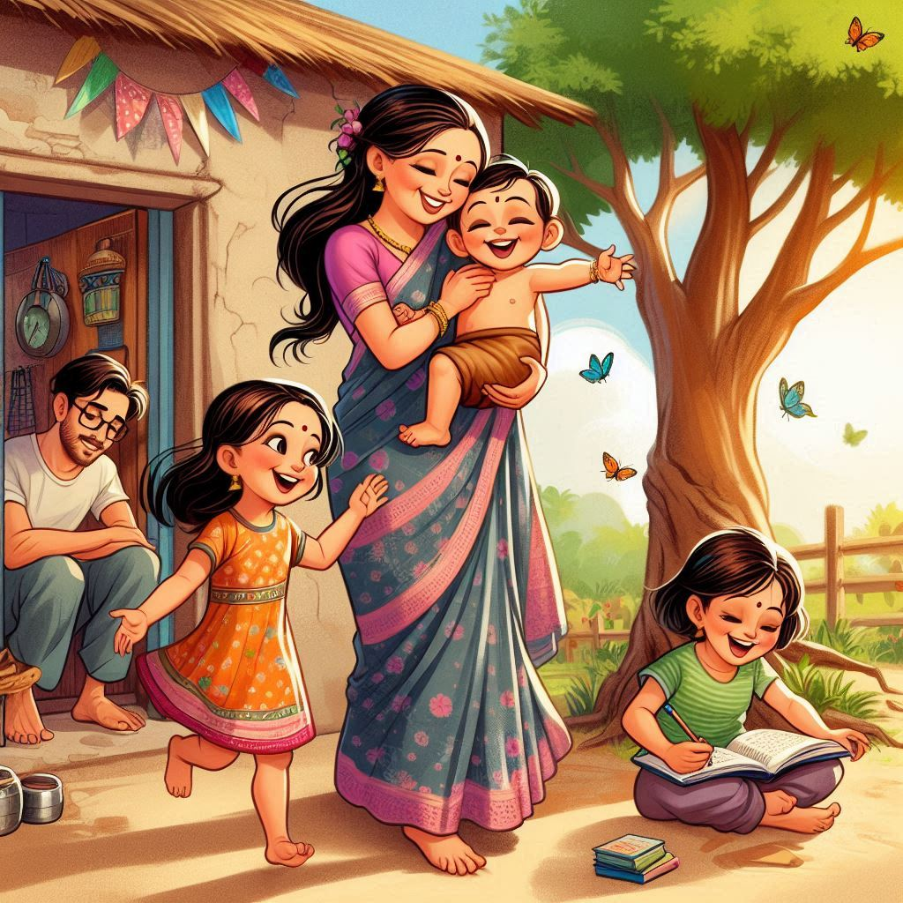
The family
The story of Shiva starts here
Chapter 1: After 4th birthday
Shiva started going to school with his sisters. Despite his reluctance, he had to go because his sister had said she
wouldn't attend if he didn't. Rama would drop him off at school, but as a child, he wanted to come back home with his
mother. His mother would threaten, "If you don't go to school, the barber uncle will cut your ear," (the barber's shop
was right in front of the school) which kept Shiva at school.
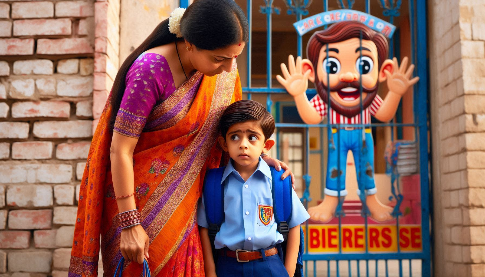
Shiva's Fear of the Barber
Chapter 2: After 5th birthday
Shiva was formally enrolled in school. The school had a policy where if three children from the same family were enrolled,
the youngest child’s fees would be waived. Due to his basic understanding, Shiva was admitted directly into 1st grade
instead of nursery. Ram chose to enroll him in a private school called Saraswati Shishu Mandir because the village's
government school had poor teaching conditions. Additionally, Shiva and his sisters received home instruction from a
tutor. Shiva excelled and passed the 1st grade exams with the highest rank in his school.
Shiva going school with his sisters
Chapter 3: After 6th birthday
When Shiva was in second grade, he memorized multiplication tables from 2 to 30, a feat even 8th graders struggled with.
This became a notable memory at his school. One day, he was called to the classroom of the 7th and 8th graders (due to
limited student numbers, rooms, and teachers, students from classes 1st and 2nd sat together, as did students from 3rd and
4th, and so on until the 8th grade) to check their classwork, where they had to write tables from 21 to 30. The teacher
handed Shiva a small stick, telling him to use it if anyone made mistakes. Shiva examined their work and found errors in
each one but refused to use the stick, despite the older students agreeing to be corrected by the younger boy and
playfully wanting to be disciplined by him.
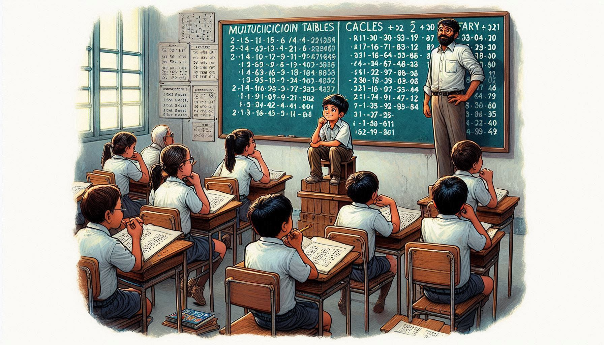
Shiva checking the seniors answer sheet
There was a time when he used to get 1 rupee as pocket money. With that, she would buy "chunmun" (a corn puff snack
available for 1 rupee) during the lunch break after prayers. One student would collect money from everyone who wanted
chunmun, go to the shop to buy a whole bundle, and then distribute it to everyone.
Chapter 4: After 7th birthday
Shiva was in the third grade. On the 13th of December 2010, Shiva had his first half-yearly test. He received the exam
paper and notebook and began writing when suddenly a man riding a bicycle from Shiva's home side informed Shiva's
instructor that his Grandfather had died. Shiva's grandfather Shambhu had passed away peacefully in his sleep.
Shiva's heart sank, and a wave of sadness washed over him. It was as if a part of him had been torn
away, leaving behind a void that seemed impossible to fill. Shiva and his sisters were allowed to leave
and return home. Shiva was taken aback when he saw a dead body in front of him for the first time.
Shiva's grandfather died due to a protracted infection in his legs that was not thoroughly operated on and did not
receive better treatment from a large hospital, and the hospital situation in the hamlet is as if there were no physicians
at all.
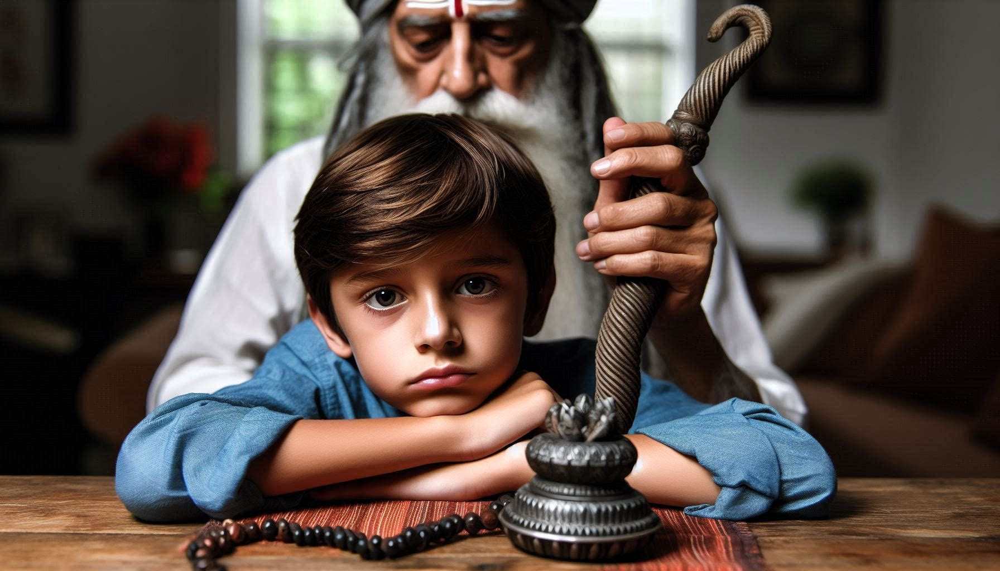
Shiva with his grandfather
Chapter 5: After 8th birthday
Shiva was moved to the 4th grade and was enjoying his school days happily. During a class led by Disha, the teacher, a
question about showing directions using hand gestures was posed. There were 15 students present that day, with 5 answering
correctly and 10 answering incorrectly. Disha decided on a peculiar punishment: those who answered correctly would slap
those who answered incorrectly, and vice versa. The twist was that the correct answers received two slaps each, while the
incorrect answers received only one. Shiva and his friends were too young to fully understand what was right or wrong in
this scenario. All they knew was that the teacher's statement was correct, even though the penalty seemed unfair. Shiva
happened to be among those who had given the correct answer.
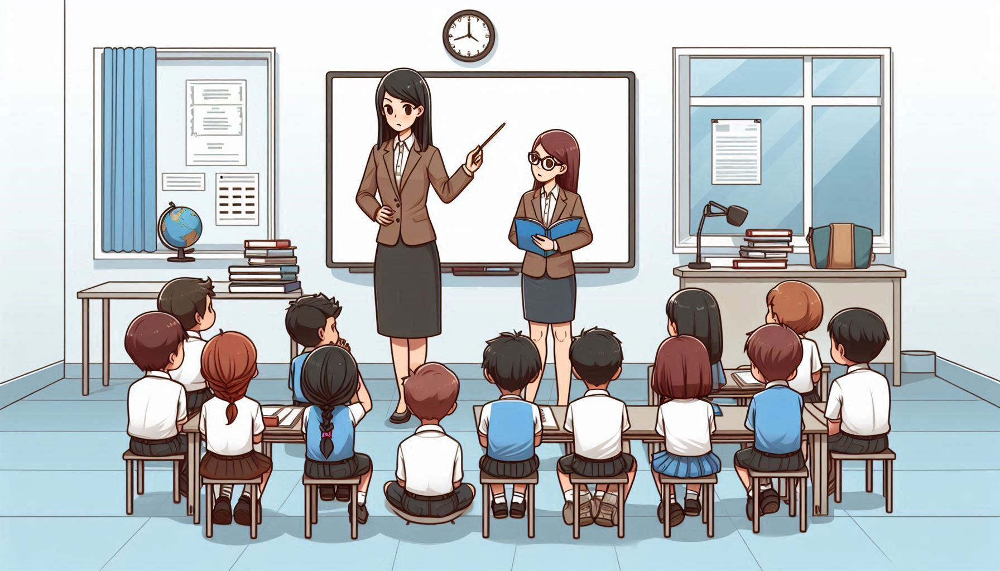
Shiva in the class
Ram spent around 20,000 rupees on a used motorbike called the Bajaj CT 100. A motorbike has now been incorporated
into his home as a gadget.
Shiva, a young child, often feels lonely because his parents don't let him play with other kids in their neighborhood.
His parents are concerned about his well-being and believe that keeping him away from other children who smoke and use bad
language is best for him, despite his desire to play freely. While I understand their concerns and their desire to keep
him safe, it doesn't make Shiva's situation any easier. He watches from his window as other kids play freely, their
laughter echoing in the air.
Shiva couldn't resist going outside one day, and he was watching his friends play Gulli Danda in the streets when a gully
came and hit his forehead. At the time, he was at home where he was born (around a km from home where his parents were
living). His neighbors treated him by applying hot mix Turmeric and oil to his forehead, however, it swelled too much.
Now Shiva came home, but he was afraid that his father would rebuke him, so he tried to enter through another door.
However, his father discovered him and asked what happened.
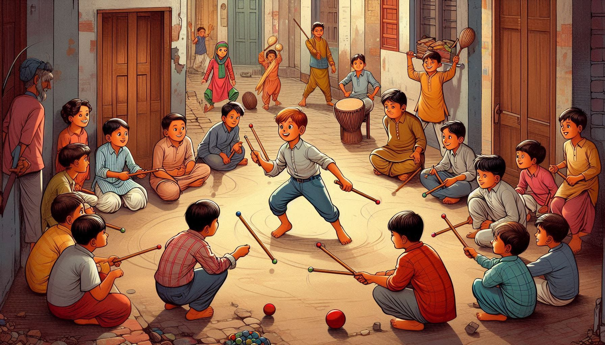
Shiva watching the other childrens
Shiva confessed that he was watching others play Gulli Danda.
His father, Ram, scolded him for going against his refusal to join them. Shiva's mother intervened, comforting him with
love and care as he sobbed over the incident.
Chapter 6: After 9th birthday
Shiva began fifth grade this year, and Ram wanted him to attend Navodaya School, a prestigious government institution.
To achieve this, they filled out an entrance exam form for Shiva. To prepare, a tutor was hired to help Shiva with the
Navodaya School entrance test.
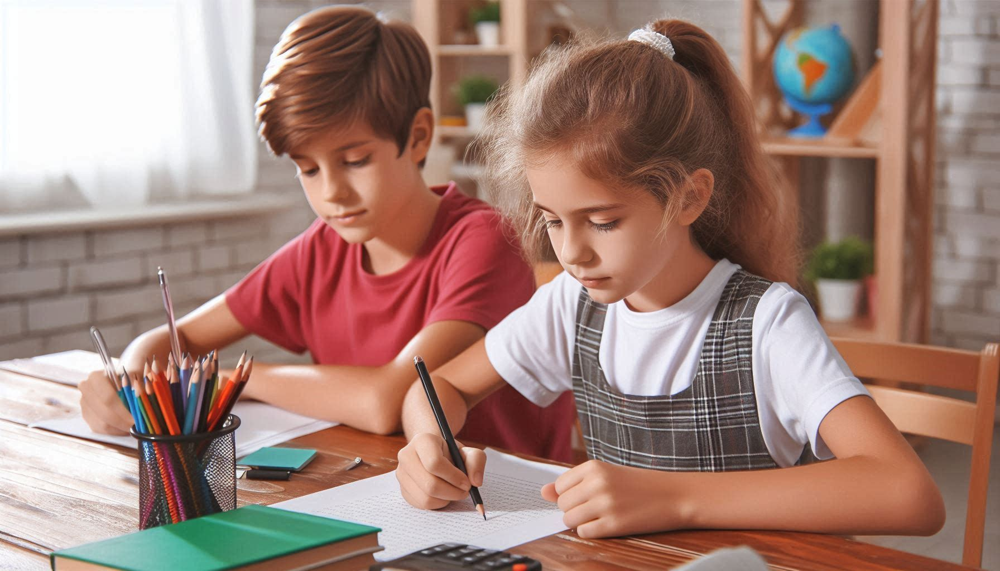
Shiva with his grandfather
The day of the exam finally came, and it was scheduled to be held in the Rampur Naikin block, about 45 kilometers from
their village. Ram drove Shiva to the exam center. Shiva took the test, but unfortunately, he was not selected. He didn’t
even receive the results, as only the successful candidates were notified. This marked Shiva's first significant failure
in life.
Chapter 7: After 10th birthday
One day, Shiva was watching a bicycle and wished he owned it. He asked the owner, a 50-year-old man named Valmik Pandey,
if he could ride it. Valmik allowed him to. Valmik then suggested to Ram that he could buy the bicycle for Shiva for just
1500 rupees. After some conversation and seeing how happy Shiva was with the bicycle, Ram decided to buy it. Valmik told
Shiva to come home another day to pick up the bicycle because he was taking it home that day. The bicycle was one
typically given to girls from government schools. Now, Shiva had a bicycle.
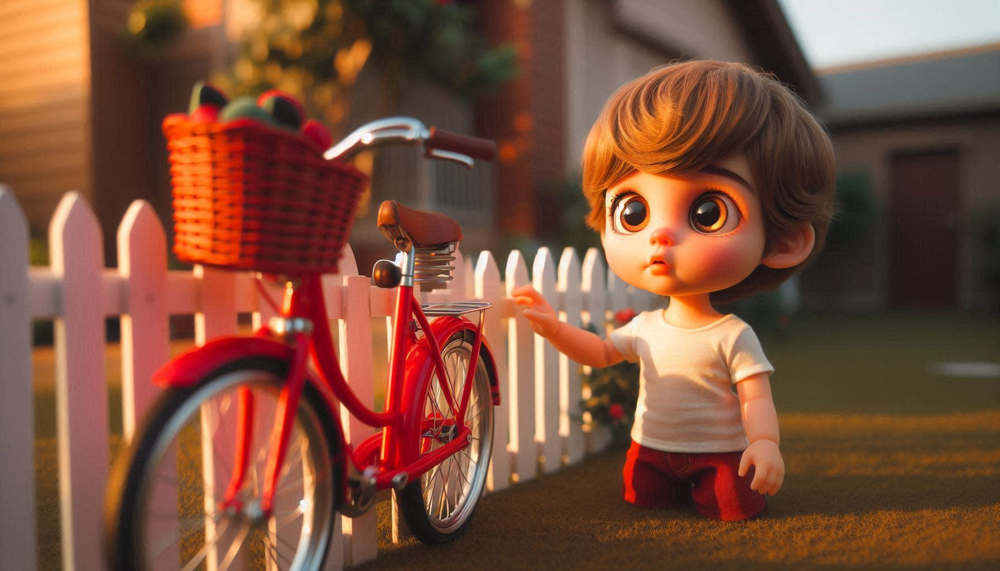
Shiva staring the bicycle
His joy was limitless when he saw the shiny red bicycle, his dream come true, ready to be ridden. He couldn't hold back
his excitement as he jumped on, gripping the handlebars tightly with his small hands. With a push from his parents, Shiva
was off, pedaling furiously and embracing his newfound freedom.
The wind blew through his hair as he rode through the neighborhood, his laughter echoing in the air. Shiva's happiness
shone from within as he experienced the pure joy of exploring the world on his bicycle. The streets became his canvas, and
with each turn, he discovered new adventures waiting to be unveiled.
Shiva learnig to ride bicycle with his father help
Shiva's bicycle became his trusty companion, taking him on fun journeys to secret hideouts, winding paths through the
park, and exciting races with his new friends. His smile never faded, and he felt joyful with every twist and turn,
enjoying the simple pleasure of being a child on a bike. The world seemed brighter and more colorful from the seat of his
bicycle. Shiva enjoyed the camaraderie and shared laughter with his friends as they embarked on thrilling adventures
together. With each passing day, his confidence grew, and he discovered a sense of independence he had never known
before.
One day, Shiva was riding his bicycle and lost in thought when he hit a stone, lost his balance, and fell, becoming
unconscious. When he woke up, he found himself on a bed in another family's home, with a doctor treating him. He didn't
remember what had happened. His entire family was gathered around him. Fortunately, it was just a minor accident, and
Shiva only had a few scrapes on his face.
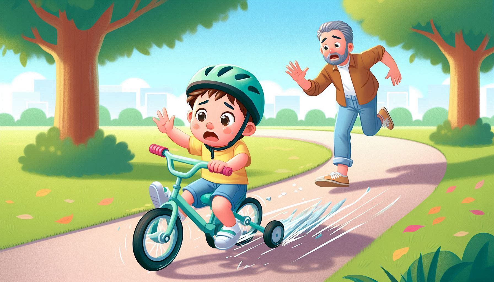
Shiva learnig to ride bicycle with his father help
Even though his family was still worried, they focused on giving him the love and support he needed. They understood
the importance of staying calm and being there for him, reinforcing their role as pillars of strength and protection.
Chapter 8: After 11th birthday
Shiva's parents wanted him to be proficient in English because he was in a Hindi medium school, but the only teacher who
provided decent English tutoring lived approximately 3 to 4 km away. Shiva used to travel there at 6 a.m. on his bicycle,
pedaling across roads and farm fields.
Once upon a time, on a morning, young Shiva was making his way back home from his tutor's house. As he rode his bicycle
along the road, he encountered a slight downhill slope that caused his speed to increase. However, his carefree ride took
an unexpected turn when he noticed a mischievous boy who had a habit of threatening others by trying to snatch their
bicycles from behind.
In an attempt to avoid any trouble with the boy, Shiva swiftly changed his cycling path, veering away to the other side of
the road. But just as he did, a group of oxen suddenly appeared on that side, blocking his way. Reacting quickly, Shiva
had to abruptly change the direction of his handlebars, causing his bicycle to lose balance.
In a desperate effort to prevent himself from crashing into a neighboring house, Shiva leaped off his bicycle, hoping to
come to a stop. Unfortunately, his face collided with the handlebars, and a bolt positioned in the middle of the handlebar
struck the top layer of his left eye. Blood began to trickle from the injury, and Shiva, filled with worry, couldn't
ascertain the extent of the damage to his eye.
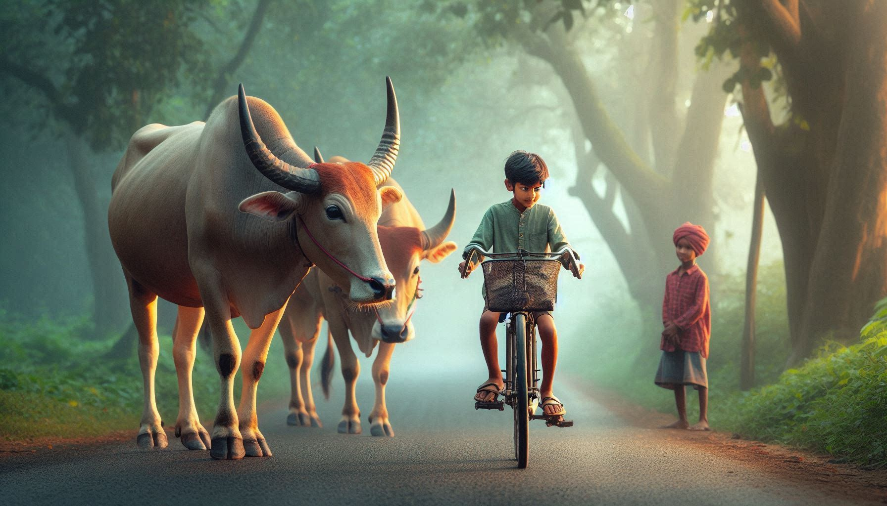
Shiva returning from tution class
Despite the pain and uncertainty about the safety of his eyes, Shiva bravely placed one hand over his injured eye and pedaled the remaining distance of approximately
800 meters to reach his home. Tears welled up in his eyes as he rushed to his mother, who, at that moment, was unaware of
what had transpired. Unfortunately, his father, Ram, was also not present as he had ventured to a nearby farmer's home on
his bicycle to procure cereals for resale in city shops.
With just one Nokia phone in the home, which Ram used to carry around, Shiva’s mother requested their kind-hearted
neighbors to inform his father about the accident. In the meantime, his concerned neighbors took Shiva to the village
hospital, hoping to receive immediate medical attention. However, upon examination, the doctor realized that the injury
was situated just above the eye, making it impossible to perform any procedures at the village hospital. The doctor
offered temporary relief by placing a cotton patch over Shiva's injured eye and advising them to seek urgent treatment
at a city hospital.
Returning home with his patched eye, Shiva was met with an unexpected visitor—a herdsman who had witnessed his earlier
cycling escapade. Misinterpreting Shiva's zigzag riding as a display of skill and style, the herdsman shared his
observation with Shiva's parents. However, given the gravity of the situation, Shiva's parents chose not to address the
herdsman's remarks, their primary concern centered around their son's well-being.
Ram drove Shiva to the city in a shared Jeep, where he discovered that the city government hospital would take
significantly longer, so he opted to go to a private hospital to receive urgent care for Shiva. The physicians at the
private hospital took care of Shiva quickly and thoroughly, and Shiva was sent back home the same day and healed within
two weeks.
A frightful Night
Once upon a time, rumors spread like wildfire through the hamlet and city about a terrifying woman who would visit every
home and tamper with the stone grinder. This stone grinder, equipped with a roller, was commonly used to make chutney in
Indian hamlets. The rumors claimed that the woman would manipulate the grinder, creating eerie figures, and anyone who
consumed the chutney made from it would meet a tragic end. It was also believed that if someone happened to witness the
woman's actions while she operated the grinder, they would face a similar fate. Additionally, there were whispers that
after using the grinder, the woman would make mysterious calls to homes, and anyone who woke up and heard her voice would
die. The rumors quickly circulated throughout all the villages in the city, including one particular listener named Shiva.
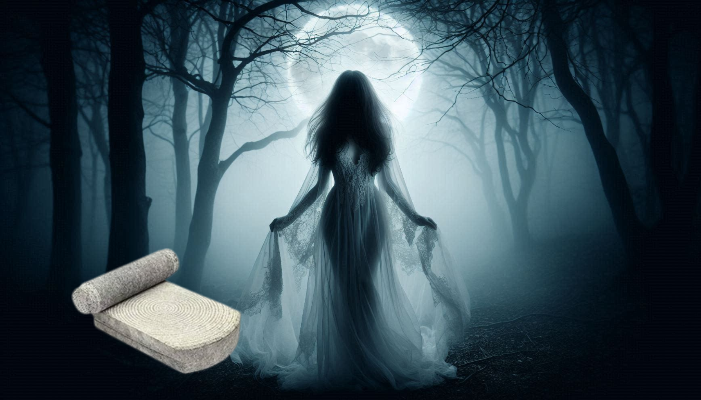
Stone grinder and terrifying woman
Shiva and his mother traveled to their relatives' house in the city of Sidhi for a family gathering. After an enjoyable
party, everyone retired to their beds for the night. As the night settled in, Shiva found himself sleeping on the sofa,
while his uncle rested on the floor nearby. Suddenly, around midnight, Shiva awoke with a start, his mind flooded with the
terrifying rumors he had heard. He anxiously glanced out the window, consumed by the fear that the dreaded woman would
arrive. Shiva feared that if he were awake and heard her voice, he would meet an untimely demise. With this fear gripping
him, he struggled to find peace and sleep for the next ten minutes. Eventually, he made his way to the floor and slept
beside his uncle, choosing not to disturb anyone's rest by sharing his concerns.
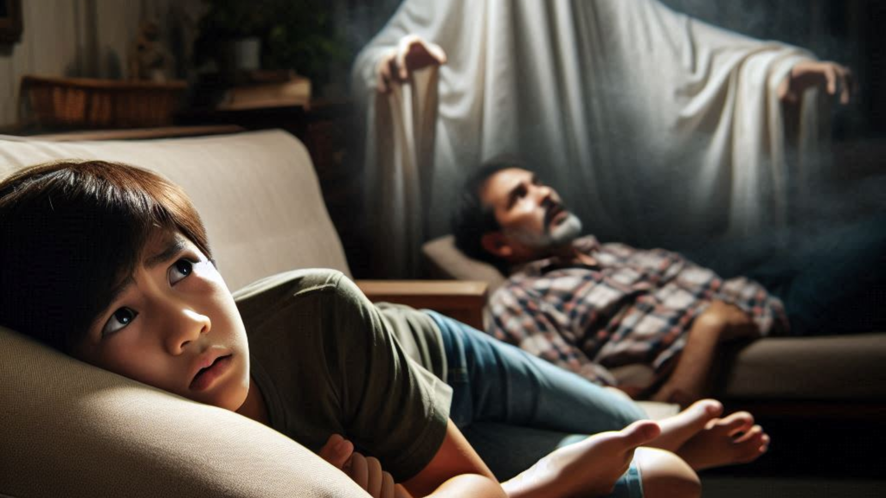
Shiva learnig to ride bicycle with his father help
However, Shiva's movement from the sofa to the floor caught his uncle's attention, causing him to wake up and notice
Shiva's obvious distress. Worried for his nephew, he gently guided Shiva closer to his mother, Rama. Rama showered Shiva
with love and reassured him that their home was protected by a divine presence, pointing to a sacred sculpture as a symbol
of their safety. Filled with love and trust in his mother's words, Shiva finally found solace and drifted off to sleep,
waking up the next morning unharmed.
Months later, the community discovered that a particular species of insect had been consuming stones, resulting in the
formation of unique sculptures. The deaths attributed to consuming the chutney were likely caused by the insect's
poisonous properties. However, the true nature of these events remained unknown to everyone.